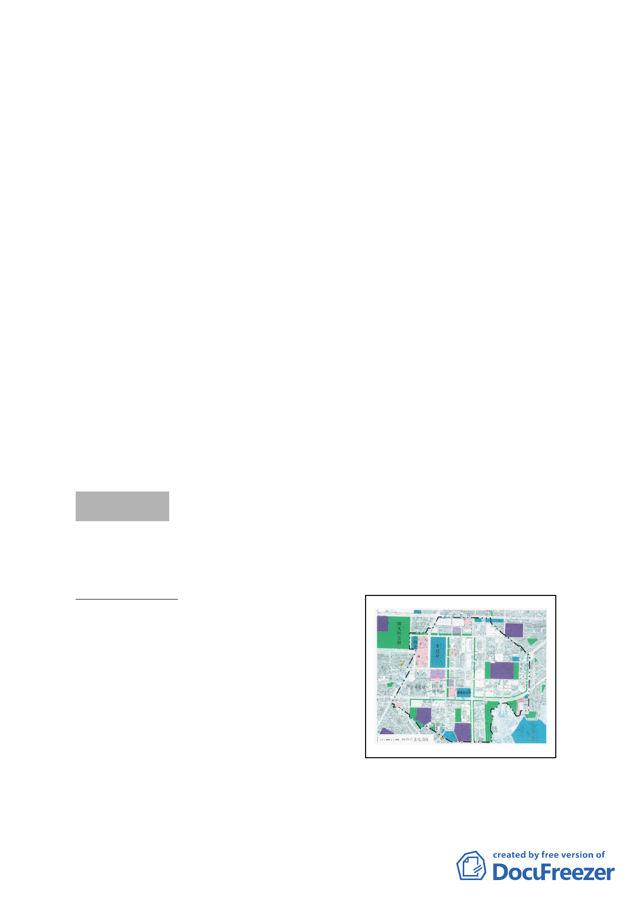

小組方式詳予審查變更案內容。
二、 另為利後續專案小組審查，請市府分就「計畫緣起內建立專
業化、社區化之全面性幼兒教育與照護體系之政策與立場」、
「基地現況環境分析」、「環境生態資料與動、植物調查」、「道
路服務水準與交通影響評估」、「坡度計算方式及內容」、「基
地之災害敏感、生態敏感及環境敏感資料」、「薇閣國小擴大
校區之必要性與理由，以及市府教育局之立場」、「整體學生
人數推估，每生使用校地面積之標準」等資訊不充足部分，
提供確切資訊與數據，並經市府各主管機關檢視確認後，併
同本次會議都委會幕僚意見、公民或團體陳情意見回應，再
行提報專案小組審議。
三、 專案小組請黃委員麗玲擔任召集人，由張委員桂林、陳委員
武正、郭委員瓊瑩、洪委員鴻智、邊委員泰明、吳委員清輝、
李委員素馨、陳小紅委員、吳光庭委員等人組成專案小組（依
都委會幕僚調查委員意願結果確定）。
四、 有關會議當天現場登記民眾發言要求納入會議紀錄之文字內
容，詳附件一、二、三。
討論事項 三
案名：修訂臺北市信義計畫地區建築及土地使用分區管制（增訂
容積移入上限）要點案
案情概要說明：
一、 計畫範圍：信義計畫地區
二、計畫緣起：
信義計畫地區可發展土地中約有 69％土地規劃為商業使
用，周邊道路尖峰時間服務水準目前已瀕臨飽和狀態（多為
- 13 -